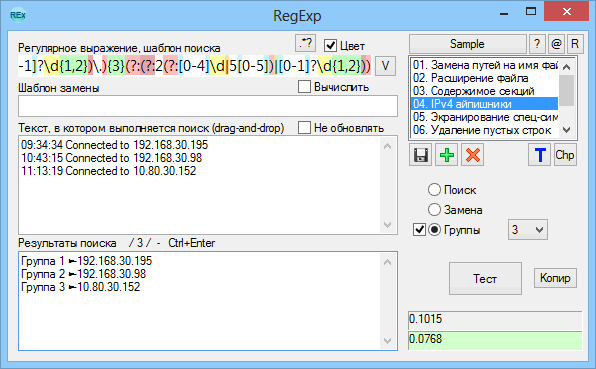

RegExp
Назначение
Тест регулярных выражений.

Взаимосвязанные
RegExp
Синтаксис регулярных выражений
Описание
Тест
Самая важная кнопка, выполняет поиск с помощью регулярного выражения
Кнопка Т
Предназначена для теста диапазона захвата. Например при вставке [А-яЁё] и нажатии Т покажет какие символы будут захвачены этим диапазоном. Это полезно когда ещё есть непонимание как это работает, когда есть сомнения в работе какого нибудь метасимвола, или когда диапазон указан в числовом коде. Это помогает проверить правильность шаблона, правильность захвата. В раскрывающемся списке можно выбрать тестовые примеры. Данный тест предназначен для захвата одного символа, поэтому просто какое нибудь регулярное выражение не будет в нём работать.
Библиотека
При запуске программа проверяет файлы в папке "Library" и добавляет их в список библиотек. Выбирая библиотеку она открывается списком в правой части окна. Клик на элементе библиотеки вставляет данные в поля. Кнопки под списком предназначены для добавления, удаления и сохранения выбранной библиотеки. Библиотека позволяет не потерять важные регулярные выражения и всегда иметь к ним доступ.
Вывод результата
Результат выводится в нижнее слева окно. Результат зависит от режима поиска. Это может быть текстом найдено-ненайдено или результатом замены или списком элементов, а также предупреждением об ошибке в регулярном выражении.
Режимы
Поиск - возвращает количество найденных вхождений.
Замена - возвращает текст, в котором выполнена замена.
Группы:
0 - проверяет найдено ли хотя бы одно вхождение, проверяет до первого попавшегося вхождения.
1 - ищет первое вхождение, возвращает найденные группы
2 - ищет первое вхождение, возвращает найденные группы и вхождение целиком
3 - ищет все вхождения
4 - ищет все вхождения и группы каждого вхождения
Галочка возле "Группы" добавляет в начало строк текст "Группа n" для удобного просмотра результата.
Скорость выполнения
Под кнопкой "Тест" есть два поля. Нижнее показывает время выполнения текущего регулярного выражения на текущем тексте. Верхнее - время предыдущего теста. Это необходимо для сравнения скорости. Если текущий тест выполнен быстрее предыдущего, то нижнее поле подсвечивается зелёным цветом, иначе красным.
Стиль оформления
В ini можно задать цвет элементов окна и цвет подсветки метасимволов в поле регулярного выражения.
Вставка метасимволов
Некоторые комбинации можно вставить с помощью кнопки ".*?", меню которого можно сделать самостоятельно в Menu.ini.
История
Кнопка истории сохраняет 30 элементов последнего использования регулярных выражений.
Взаимодействие с программами
Чтобы использовать или сохранять регулярные выражения других программ можно использовать команды вставки и захвата. Также взаимодействие может быть через ком-строку.
Командная строка
-s:"регулярное_выражения_для_поиска"
-r:"строка_замены"
-p:"путь_к_обрабатываемому_файлу"
Текущие команды всего лишь заполняют поля при запуске. Как это можно применить? Например в Notepad++ можно выслать путь к файлу и выделенный текст, а значит при запуске можно обрабатываемый текст сразу вставить в соответствующее поле. В другом случае выделенный текст являющийся регулярным выражением можно вставить в поле поиска.
-n:"номер"
Здесь номер может быть 1, 2, 3, что означает Notepad++, SciTE, AkelPad4. При этом поля поиска и замены соответствующих редакторов будут захвачены при запуске программы. Так как захват требует не свёрнутости окна, то захват происходит с одновременным разворачиванием окна, если программа свёрнута. Параметр -n: несовместим с -s: и -r:, так как перепишет их, но совместим с -p:.
Флаги
top - короткое название "Поверх всех окон"
цвет - подсветка регулярных выражений
Не обновлять - при вставки из библиотеки не заменяется текст для обработки. Допустим нужно обрабатывать свой текст разными регулярными выражениями.
Вычислить - фича для AutoIt3 в основном. Проблема в том, что в заменяемой строке не поддерживаются метасимволы, например, \r\n и поэтому невозможно проверить такое регулярное выражение. Но можно записать так '$0'&@CRLF где $0 это собственно найденное, апострофы (или кавычки) - что это текст, амперсанд - символ объединения строки с макросом, @CRLF - макрос, который возвращает \r\n. Грубо говоря, ваш текст нужно заключить в кавычки и с помощью амперсанда присоединить перенос строки, хоть справа, хоть слева, хоть в средине, например так "текст"&@CRLF&"текст"
Справка
F1 - для вызова справки по регулярным выражениям - RegExpHelp.hta.